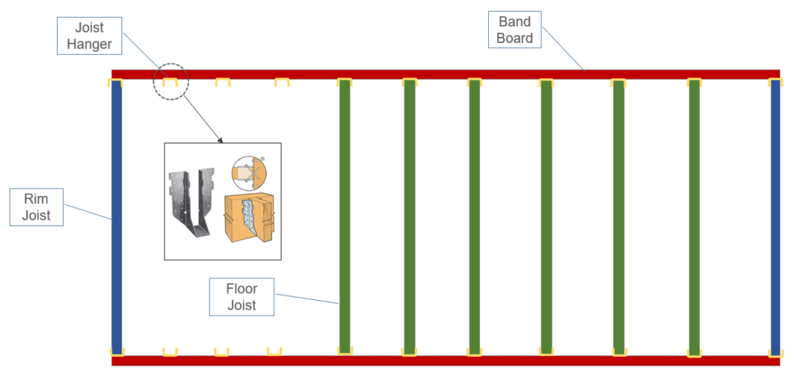

Virtual Reality for Prototyping Factory Processes
Senior Capstone Project
Problem
Modular home development is used to create homes in pieces in a factory.
These pre-assembled pieces can then be shipped to construction sites for quick home installation.
A problem occurs when a new worker is hired or if any process in the factory changes.
In order for training to take place, production must either be halted or slowed down.
Solution
Create a virtual reality factory in which workers can be trained on different tasks.
This method allows for workers to be trained without affecting production.
This project focused on the implementation of the construction of floors for the homes.
Below is an illustration of the creation of a floor that a worker would have to follow:
